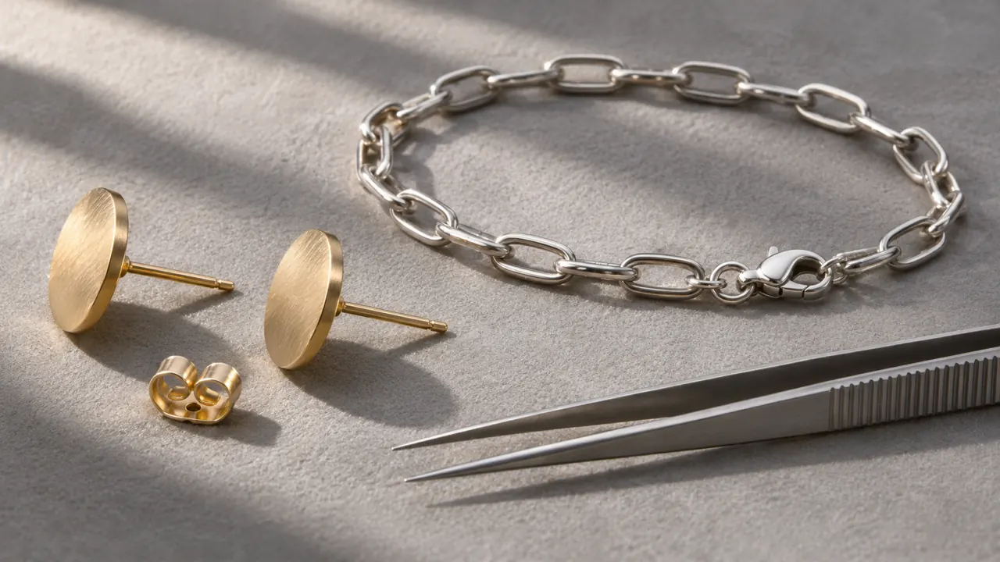

A jewellery buyer in Amsterdam orders four hundred pairs of gold-tone stud earrings and two hundred silver-tone bracelets from a workshop in Istanbul. The supplier sends a signed statement saying its brass is suitable for jewellery. A photograph shows flawless plating. What would justify releasing these particular pieces for EU sale? Start by turning an assembled sample over. The post, the back, the decorative face, the chain and the clasp may each have a different maker, finish and pattern of contact with skin.
Draw the surfaces someone will actually wear
Put one finished example of each design on a plain background. Photograph the front, underside and fastening with a ruler in view. Give the components short names that the workshop recognises. A buyer might call a part the butterfly, while the supplier’s parts list describes a clutch. A lab report referring simply to an earring leaves an important question unanswered if it never identifies the post inserted into the piercing.
Ask how the piece sits during ordinary use. A stud has a stem passing through pierced tissue and a front that may rest against the earlobe. A bracelet rotates, so its underside, links, extension chain and fastening can touch the wrist. A polished charm hanging away from the skin presents a different question from a flat identification plate designed to lie against it. Give the laboratory enough photographs, dimensions and product information to explain its treatment of each surface.
The governing restriction appears in REACH Annex XVII, entry 27. Its limits concern the rate at which nickel is released. A raw alloy composition, plating supplier’s invoice or handheld elemental reading can help identify materials and production changes. None measures how much nickel migrates from the finished contact surface under the prescribed assessment. Keep composition evidence in the file and obtain an answer to the release question as well. REACH Regulation (EC) No 1907/2006, Annex XVII, entry 27 on nickel
Use the right threshold for each component
For the assembly inserted through a piercing, the release rate must be below 0.2 micrograms per square centimetre per week. For the parts of articles intended for direct, prolonged skin contact, the restriction prohibits a rate above 0.5 in the same units. The inequalities differ. An exact value of 0.2 fails the literal “below” condition for an inserted post. A laboratory’s reported conformity decision also depends on the applicable method and its treatment of measurement uncertainty. A rounded figure on a sales sheet is insufficient for deciding a borderline case.
For relevant prolonged-contact articles with a non-nickel coating, the coating must keep the release at or below the applicable 0.5 limit throughout at least two years of normal use. A photograph of a freshly plated bracelet says little about what rubbing against a cuff does to its finish. The duration requirement in entry 27(1)(c) refers to the articles in point (b). Discuss the inserted assembly under its own provision when drawing up the laboratory brief.
When reviewing contact, ask how long the accessory usually stays in place. A bracelet advertised for all-day wear provides a straightforward example. A brooch pinned to a lapel raises a different issue from the same ornament worn as a pendant against a bare neckline. For an unusual detachable accessory, describe the way a customer wears, adjusts and removes it. Keep that rationale alongside the photographs. A product name alone rarely captures how it touches the wearer.
Commission a report that identifies the Turkish production samples
The Commission’s published list of test standards names EN 1811:2023 for nickel release from relevant post assemblies and prolonged-contact articles. It names EN 12472:2020 for accelerated wear and corrosion of coated items. Ask the laboratory which methods it will apply to each component, the order of assessment and how the relevant surfaces will be identified. Give it an opportunity to request spare units before a courier collects the parcel. Commission Communication C/2023/1604, European nickel release and wear test standards
Imagine a laboratory quotation headed “metal accessories, four tests”. Buying against that description invites disagreement. Identify the stock reference, design revision, colourway, component, manufacturing site and production lot. Specify the number of representative pieces being submitted and any significant variation between them. Ask the lab to identify exclusions, report the units and record its conformity decision. A clear scope also lets purchasing compare two laboratories quoting apparently different prices for the same assortment.
Send production examples that represent the goods you intend to sell. A model maker may hand-polish a show sample, whereas the workshop tumbles ordinary units and sends them to a subcontract plater. Ask where the samples came from, who selected them and when they were sealed. Maintain a dispatch note and a matching retained piece. A photograph of the parcel before shipment can resolve a later dispute about which finish was actually inside.
Read the report from the photograph to the conclusion
First compare the laboratory image with the retained specimen. Does the clasp have a straight lever or a curved trigger? Is the stud round or oval? Can you distinguish the underside of the ornament from its outer face? Move from the image to the identification table and then to the individual results. A conclusion printed on an attractive cover page cannot cure a substitution farther down the document.
Suppose a report gives an inserted post a result of 0.12 and a bracelet contact surface 0.32, both expressed in micrograms per square centimetre per week. Those readings lie on the favourable side of their respective thresholds. Before approving either item, confirm the lab’s decision under the stated method. Check whether the bracelet went through the appropriate wear assessment and whether the number beside the post really belongs to the inserted component. The figures in this example are illustrative.
Now suppose the report instead describes an uncoated brass disc supplied by the plating contractor. It could tell you about that disc. It cannot tell you whether the gold-tone earrings, with their soldered posts and separate backs, meet the restriction as sold. Ask for a revised sampling proposal. Record exactly which purchase lines remain on hold so goods receiving can accept unrelated stock without releasing the affected designs.
Decide which colourways a single result can support
A collection may share the same silhouette but use a different substrate, underlayer, decorative finish or polishing sequence. Ask the workshop for a component-by-component comparison. Consider a yellow finish on brass and a silver finish on stainless steel. Their photographs might look like variants of one model in a catalogue. The underlying materials and manufacturing routes give the laboratory a reason to assess their representativeness separately.
The opposite situation can also occur. Two bracelets might differ only in length because an identical chain is cut at different places, with the same clasp fitted on the same line. The buyer can ask whether the evidence reasonably covers both lengths and whether extra links introduce a distinct component. Record who evaluated the comparison and the basis for the conclusion. Avoid promising a universal family-testing shortcut to every supplier.
Include repairs and replacements in that analysis. A factory facing a shortage may buy substitute backs or fit an extension supplied by another workshop to meet a delivery date. A cheaper spring inside a similar-looking closure can change the question the lab was asked. Agree which substitutions require disclosure and which evidence must accompany a change. A production supervisor needs an easy way to raise that question before thousands of pieces are packed.
Make receipt and release different warehouse events
At arrival, match outer carton marks with the packing list, purchase line and supplier’s batch reference. Open selected cartons using an agreed sampling approach. Compare the actual fastening, appearance and packaging with the retained reference. A missing traceability label or unexpected variation creates a specific follow-up. A warehouse clerk can record a mismatch and set aside the affected cartons without having to interpret a chemical test.
Consider a shipment split across three boxes. Two contain the curved lobster clasp pictured in the approved report. The third contains a straighter version with a larger spring lever. Photograph it, segregate the third box and ask whether the changed component appears elsewhere in the delivery. If the workshop cannot trace the substitution to particular boxes, expand the hold to the units potentially affected. Record the rationale for any narrower release.
Set the exit condition in writing. The laboratory may confirm that an existing assessment covers the component, or additional representative testing may be necessary. A replacement consignment may resolve the immediate order while leaving stock from the first delivery on site. Keep its location, quantity and disposition visible until the reconciliation balances. A credit note settles an accounting matter but cannot tell the warehouse which carton to remove from the shelf.
Put evidence and costs into the purchase agreement
Discuss costs when negotiating the first order. Who pays for the ordinary assessment, repeat testing after a production change, courier charges for samples and storage during a disputed result? Agree how buyer and seller will select a competent laboratory and obtain a second opinion. Preserve a specimen for each side where quantities permit. A documented acceptance procedure gives both parties a fair chance to investigate before evidence disappears.
Make the approved reference sample specific about what the buyer approved. Colour, dimensions, finish and fastening strength can be checked separately from nickel release. Date the drawing and the report, identify the component revisions and tell the supplier where a later specification prevails. Require written agreement for a material alteration and a revised release decision where the change affects existing evidence. Assign a contact who can act when the usual buyer is travelling.
Vague marketing language can create another dispute after the technical question is settled. Ask what the company means when it calls a line “nickel free” or “hypoallergenic”. Evidence about a migration limit answers a narrower question than a claim about total absence or every individual wearer’s reaction. Give the copywriter the description the product file actually supports. Check marketplace listings, printed swing tags, influencer briefs and translations for consistency before launch.
Investigate a complaint while the evidence still exists
Suppose a customer returns a bracelet after noticing discomfort under the clasp. Thank the customer and request the product reference, purchase date and a description of where contact occurred. A complaint does not establish its medical cause. It does give the retailer a reason to identify the batch, review other reports and consider whether available units should be held while the facts are checked. Handle personal information with care and limit circulation to those dealing with the case.
Compare the returned piece with a retained unit from the same production lot. Look for abrasion, an exposed joint, a changed fastening or a misunderstanding over which supplier shipped the order. Preserve both pieces for the laboratory and record any cleaning or handling before analysis. If the assessment identifies a noncompliant or dangerous product already in distribution, promptly determine the applicable corrective action, authority notification and customer communication with the responsible teams. Entry 27 prohibits placing nonconforming articles on the market. The General Product Safety Regulation also sets out duties for importers and distributors of dangerous products within its scope. General Product Safety Regulation (EU) 2023/988, Articles 2, 11 and 12
The Amsterdam buyer can now give an answer for each purchase line. Release the identified units supported by representative evidence and the laboratory’s decision. Hold a variant whose coating, post or clasp remains unexplained. Ask for a specific document or specimen against each open point. The resulting record allows the workshop, importer and retailer to reconstruct why a particular pair of earrings was offered to customers on a particular day.
Frequently asked questions
Can a brass composition sheet establish the release rate of a plated earring?
It describes the material. Ask for evidence covering the finished post and other relevant contact surfaces, identified by their production references.
Does a longer bracelet always need a separate test?
Ask the laboratory to assess whether the existing evidence covers the chain, finish and clasp of both lengths. Document the conclusion and any components that require a separate assessment.